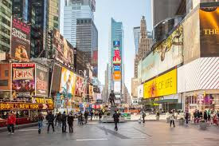
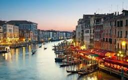

The three places in the world that I would like to visit are Time Square in New York, The Taj Mahal in India, and Venice in Italy.
Time Square
Time Square is a unique commercial place in the world intersection of Broadway and Seventh Ave where you will see a concentration of buildings, lights and people at the same time. New York City is known as the city which never sleeps therefore, any time you go to Time Square the place is always vibrant night and day. Between Broadway’s shows musicals, New Year eve event, and other attractions tourists will have dilemma of choice. Traveling south bound on Seventh Ave will provide an exceptional view of Time Square.
The Taj Mahal
Secondly I would like to visitThe Taj Mahal in India which is a white marble tomb built in the 1630s during 22 years by the emperor Shah Jehan for his wife Mumtaj Mahal whom he loves the most. The Taj Mahal is visited by 7-8 million people every year. The Taj Mahal symbolizes the love and romance. The white marble with what it has made of stands for the purity of the monument. Understanding the story behind the monument make people love more. It has been classified as UNESCO’s site.

Venice
Lastly I will travel totaly because it is the monument of history and its architecture is beyond imagination. Venice is known by the city of romance and the city without roads. The city is built on more than 100 small islands in a lagoon in the Adriatic Sea. It has multiple canals with the most famous one is the Grand Canal all connected by bridges. The city is the capital of Veneto region located on the north side of Italy. Venice also is classified as one of UNESCO’s protected place.
